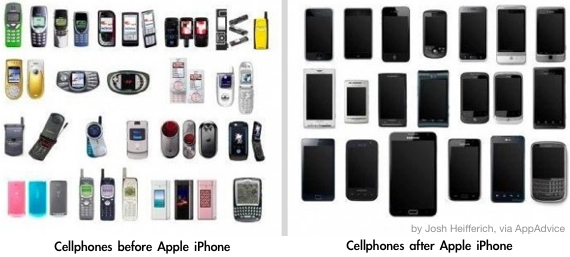
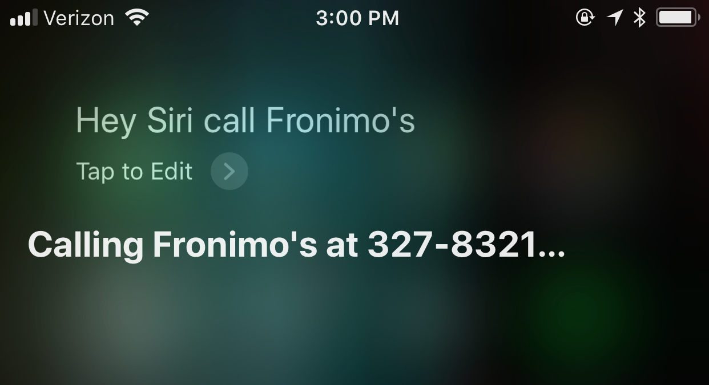

November 2017
iOS & Apple news
iOS 11.1.1 has been released, including many new emoji.
A small thread critiquing `dumpling' emoji implementations by various companies. No surprise on which is the best (click on the date below the quote to see the whole thread):
A small thread reviewing the upcoming "dumpling" emoji implementations:
— Neven Mrgan (@mrgan) October 10, 2017
The iPhone X is out! Pre-orders started a few seconds past midnight on Oct 26 (officially Oct 27). It is now available for sale at apple stores, online, and via the carriers, all of whom are offering incentives.
The Best Damn Product Apple Has Ever Made: iPhone X, says iMore. A review worth reading. Very comprehensive. The reviewer concludes: `It's expensive. It's hard to get. It will take some getting used to. And it'll have its share of quirks. But it's not just tomorrow's iPhone today and it's not just the beginning of what comes next. It's the best damn product Apple has ever made. And it's the most fun I've had with any device since the original iPhone.'
Face ID makes security invisible, writes Jason Snell. `changes the game by separating the act of unlocking iPhone from physical interactions with the phone's screen or buttons. Put together with the Raise to Wake feature introduced with iOS 10, the natural act of lifting the iPhone X and glancing at it performs two tasks that used to require interaction: waking up the device and unlocking it. When I pull the iPhone X out of my pocket and look at it, it's already on and unlocked. I can decide what to do next.’
Yes, the iPhone X camera is great. Take a look at using an iPhone X camera on a trip to Guatemala, by professional photographer Austin Mann. He also found some less talked about features, including Dolby Vision and improved mic.
The review above is worth reading to get info on some changes: how to get the battery percent, reachability, and other gestures.
For those considering an iPhone 8 Plus, Astin Mann has reviewed the camera during a trip to India, with very impressive results.
Always fun to recall: cell phones before and after iPhone was created by Apple:

Patent shows Apple is developing Watch technology to detect heart abnormalities and blood pressure, with a watch band.
another patents shows Apple is investigating self-adjusting watch bands, reports AppleInsider.
For anyone who is keeping tabs: what it takes to build Apple Park.
siri calling Fronimos
Recently, Olga asked Siri to call Fronimo’s to confirm our iPUG reservations. She said `Siri, call Fronimos’. As we saw in our last meeting, hilarity ensued as Olga slowed down her speech pattern to help Siri understand which made matters worse. However, since upgrading to iOS 11, Siri understands the command and calls Fronimo’s easily.

tips & tricks
For iPhone X, read 4 tips at the bottom of this review, for gestures and reachability.
[ DEMO ] With iOS 11, the new Control Center shows a lot of controls. But did you know that many have further controls? Tap and hold to see additional options.
[ DEMO ] How one-handed typing works on iPhone with iOS 11. (iPhone with a new email draft)
[ DEMO ] How Multitasking works on an iPad with iOS 11.
[DEMO ] How to drag and drop on an iPad with iOS 11. (iPad with new email draft, open Photos app, multiple select photos drag-drop on email message. Drag drop URL from Safari in split view.)
watch
A Week On The Wrist: Apple Watch review of the Series 3 Edition watch. Written by an expert on mechanical watches. This is a thorough review of the device and its impact on our lives as well as the marketplace. Very highly recommended reading.
Among other things, the reviewer writes: `Series 3 has a barometric altimeter that measures, for the first time, relative elevation. That’s helpful for climbing stairs, skiing and snowboarding, hiking, etc. It has a new W2 wireless chip that was developed by, you guessed it, Apple, and offers better performance using less power. There is an entirely new processor within Series 3 that makes it up to 70% faster than Series 2. This is huge, and if you haven’t tried an Apple Watch since the first generation, you’ll be shocked by the differences in speed. Finally, the biggest change to Apple Watch Series 3 is that now, for the first time, it features cellular capabilities as a stand-alone device, meaning it can operate without your iPhone being within Bluetooth range. Doesn’t sound like a big deal? I didn’t think it was either, until I tried it.'
He also writes: `I don’t know that I ever would’ve guessed I would say this about a smartwatch, but Apple Watch Series 3 might make your life better – you’ll be less connected with the digital world and more connected with the real world around you,” Clymer writes. “Apple Watch Series 3, Edition or not, is the watch we’ve been waiting for from Apple. As mentioned, the cellular capabilities alone elevate this product from a niche peripheral to something that could become instrumental to millions of people’s daily lives.’
A nice overview of watchOS v4, from AppleInsider:
How to customize the new Siri watch face, so that it is best suited to your needs.
With the release of watchOS 4.1, the Stand bug has been fixed.
Here is an overview of watchOS 4.1, by 9to5Mac, based on an earlier beta.
Pay
Well Fargo has added support for Apple Pay, at more than 5,000 of its ATMs across the United States. This enables customers to initiate an ATM transaction by holding their iPhone or Apple Watch near an NFC-enabled ATM terminal and inputting their PIN.
iOS apps
The app This is Tucson is the app version of the website This Is Tucson that provides info on events. `We get all the details right: where the best bathrooms are for changing a toddler, how to have fun when your flip-flops melt to the sidewalk, where to get a snack before someone gets hungry, where to pick up the best local iced coffee. Let us help you find a surprise in your hometown — all on your phone before the kids are up or after they’re in bed.’
Elk is a currency converter that has won an Apple Design Award. It is clever and easy to use. It also comes with an Apple Watch companion app. Wonderful when traveling. Olga used it recently, and the app detected automatically that she was in Switzerland, and offered conversion from Swiss Franc to US dollars.
AppAdvice lists the best apps from October.
Complete Anatomy is a 3D anatomy app for medical students and anyone else interested. It incorporates AR.
MeasureKit app is an AR ruler for iOS. Take a look:
The Best ARkit apps, a list by iMore.
Not sure what food is in season? There’s an app for that: SeasonalFoodGuide.com is an iOS app and a web-app.
If you are too sleepy when you wake up, consider Wakeout: it’s an app that guides you through full-body movements to help invigorate you and wake you up. It lasts 3 minutes.
FocusList is an app to help you focus and track what you need to do. It implements the Pomodoro technique but does more. Olga recommends it highly. It's available for iOS, watchOS, and Mac. You need not use all of these together, but if you want to, they sync.
An excellent VPN choice for iOS devices is Cloak. The app has now been renamed to Encrypt.me and offers the same services. It is also available for Mac users. Olga recommends it and uses it on all her devices all the time.
[ DEMO ] Blink is a fast and simple app to help you remember your todo's. It's one of the most innovative apps. No usual checklists. The main goal is to make it super easy and fast to enter what you need to remember. Double tap and you start writing immediately (no plus signs, no extra fuss, menus, etc.). You can also tap and hold the screen and dictate a memo. Blink is free.
4 Must Have apps for the iPad Pro and Pencil combination: Procreate, Photoshop Sketch (free app and requires a free account with Adobe), Notability, Affinity Photo (like Photoshop on a Mac), Astropad Studio. Watch a very nice overview of these apps by Will Paterson, artist and illustrator:
Medisafe Pill Reminder is a free app to let you track your family's prescriptions and pills. It's a reminder and a tracker for multiple people. It allows multiple users in one app, so you can track many people, including young kids, or aging parents, or anyone else in a family.
Want a second phone number without buying a separate phone and extra service? Consider Hushed. It's an iOS app and a service. This allows you to keep your main number hidden, which can be useful for sales on Craigslist or other times you want to maintain privacy. You can get a phone number for $2. You can pay as you go or pay monthly or yearly.
TechChrunch discusses Hushed as a service that brings disposable phone numbers to over 40 countries.
Burner is a similar service, offering phone numbers as alternates to your main number so you can preserve anonymity when you want it.
Want to send and receive faxes via iOS? Here are some good choices for faxing, by TidBits.
A list of the best vector-based drawing apps for iPad, by AppAdvice.
Are you into astronomy? The Best Stargazing Apps, a list by iMore.
For those who use iMessage apps, here are the best iMessage apps that are also free, a list by AppAdvice.
photography and art
If you want really great photography, `If you truly care about great photography, you own an iPhone', writes ex-Senior VP of Google, Vic Guntdorta.
He also writes in his Facebook post:
`The end of the DSLR for most people has already arrived. I left my professional camera at home and took these shots at dinner with my iPhone 7 using computational photography (portrait mode as Apple calls it). Hard not to call these results (in a restaurant, taken on a mobile phone with no flash) stunning. Great job Apple.'
Liza Donelly is a cartoonist for the New Yorker and also an artist for CBS. See why she chooses an iPad Pro with Paper app over a Wacom tablet, as reported by Tech republic.
PixelWakker is an app inspired by pointillist painters. It turns your photos into pixel art.
Sktchy is unique app. It brings together a community of artists and lets users post pictures of themselves for artists to draw or paint. You can follow favorite artists, get feedback on your own art, or compare artistic interpretations of the same subject.
Lettering for Beginners, using Procreate and an iPad Pro:
Artist Rosi Avelar is interviewed about how she uses her iPad with Paper.
options for older devices
If you don't want to sell your older iOS devices, but you are planning to upgrade to a new iPhone or iPad, here are some ideas about what to do with your old iPhones and iPads, the WSJ.
Of course you can also give them as gifts to family.
No matter what you decide to do, What to do before you sell or give away your iPhone or iPad, by Apple.
If you want to sell or buy iPhones, iPads, Apple Watches, consider using Swappa. It's a marketplace designed for this purpose, sales are fast and secure. Olga recently used it to buy 2 used iPhone 6 (for gifts), and to sell 4 old iPads, and 2 Apple Watches. All were very good experiences and the sales give nearly 2x what Gazelle offers.
Another option is Apple. They take your old devices and give you instant credit.
Here is a checklist of what to do to prepare your iOS device for sale, provided by Swappa.
Are you buying a new iPad soon? How to take your data plan to a new iPad, reports the NY Times.
Sleeves
Wrappers are high quality sleeves for iPhones, iPads, and Macbooks. They offer sleeves made of felt, Alcantara (a man-made suede-like fabric made in Italy), as well as linen/fabric sleeves. All are lined.
A nice felt sleeve Emerson Gray, for your iPad, iPhone, or Mac. Made in England, laser-cut. Olga showed us a yellow one for her iPad Pro 10.5.